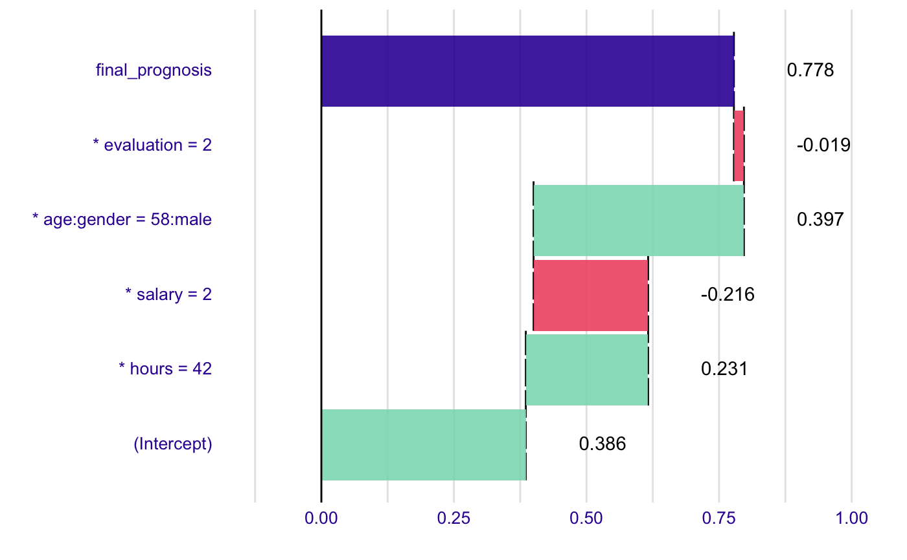
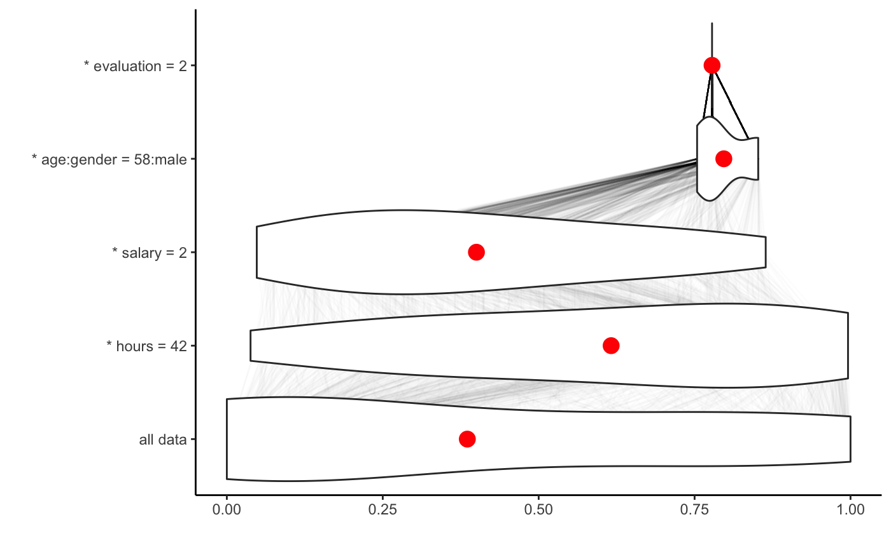
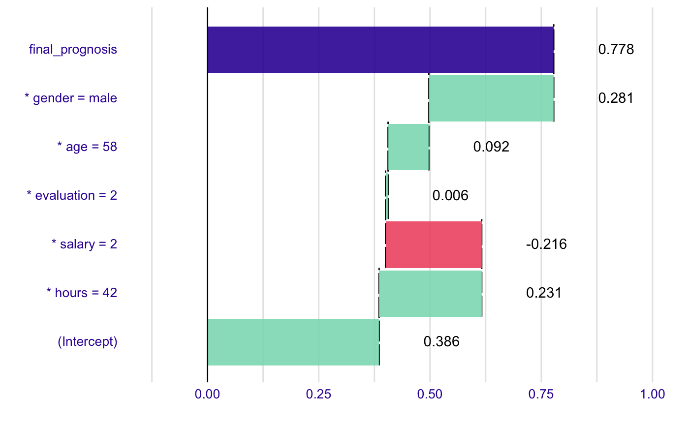
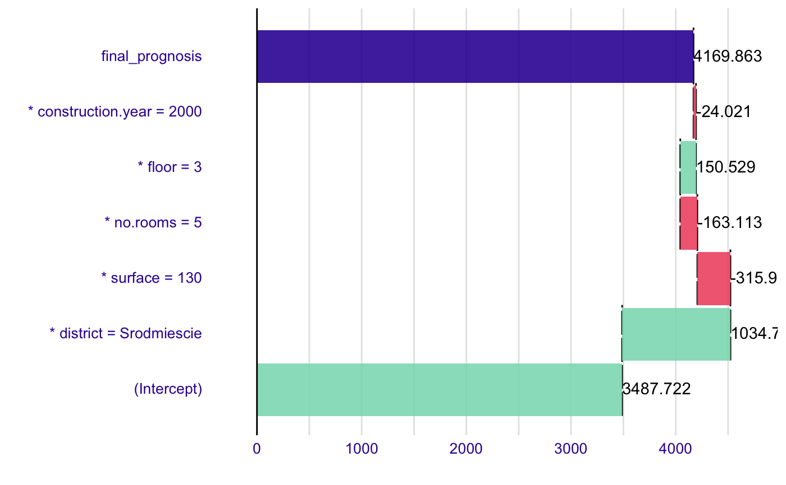

Model Agnostic Experimental Approach to Break Down Plots with Interactions
This function implements decomposition of model predictions with identification of interactions. The complexity of this function is O(2*p) for additive models and O(2*p^2) for interactions. This function works in similar way to step-up and step-down greedy approaximations, the main difference is that in the fisrt step the order of variables is determied. And in the second step the impact is calculated.
break_down(explainer, new_observation, check_interactions = TRUE, keep_distributions = FALSE)
Arguments
| explainer | a model to be explained, preprocessed by function `DALEX::explain()`. |
|---|---|
| new_observation | a new observation with columns that corresponds to variables used in the model |
| check_interactions | the orgin/baseline for the `breakDown`` plots, where the rectangles start. It may be a number or a character "Intercept". In the latter case the orgin will be set to model intercept. |
| keep_distributions | if TRUE, then the distribution of partial predictions is stored in addition to the average. |
Value
an object of the broken class
Examples
library("DALEX")#>library("breakDown") library("randomForest")#>#>set.seed(1313) # example with interaction # classification for HR data model <- randomForest(status ~ . , data = HR) new_observation <- HRTest[1,] data <- HR[1:1000,] predict.function <- function(m,x) predict(m,x, type = "prob")[,1] explainer_rf_fired <- explain(model, data = HR[1:1000,1:5], y = HR$status[1:1000] == "fired", predict_function = function(m,x) predict(m,x, type = "prob")[,1], label = "fired") bd_rf <- break_down(explainer_rf_fired, new_observation, keep_distributions = TRUE) bd_rf#> contribution #> (Intercept) 0.386 #> * hours = 42 0.231 #> * salary = 2 -0.216 #> * age:gender = 58:male 0.397 #> * evaluation = 2 -0.019 #> final_prognosis 0.778 #> baseline: 0plot(bd_rf)plot(bd_rf, plot_distributions = TRUE)# example for regression - apartment prices # here we do not have intreactions model <- randomForest(m2.price ~ . , data = apartments) explainer_rf <- explain(model, data = apartmentsTest[1:1000,2:6], y = apartmentsTest$m2.price[1:1000], label = "rf") bd_rf <- break_down(explainer_rf, apartmentsTest[1,], check_interactions = FALSE, keep_distributions = TRUE) bd_rf#> contribution #> (Intercept) 3487.722 #> * district = Srodmiescie 1034.737 #> * surface = 130 -315.991 #> * no.rooms = 5 -163.113 #> * floor = 3 150.529 #> * construction.year = 2000 -24.021 #> final_prognosis 4169.863 #> baseline: 0plot(bd_rf)plot(bd_rf, plot_distributions = TRUE)